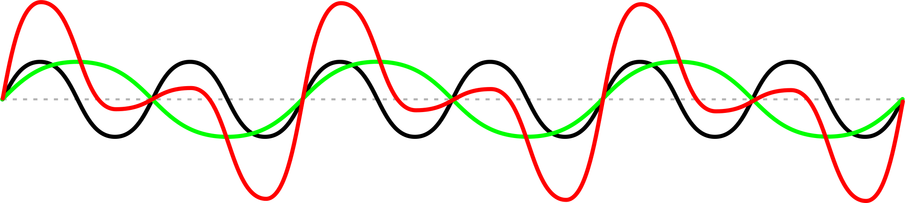

Descrição não disponível
Descrição não disponível
Descrição não disponível

Descrição não disponível

Descrição não disponível
Descrição não disponível
Descrição não disponível

| Recompensa | Descrição | XP | |
|---|---|---|---|
| |
Z Master (Obrigatória) | Exercícios de transformada Z | 75 |
| Filter developer (Obrigatório) | Descrição não disponível |
75 | |
| FPGA Apprentice (Obrigatório) | Descrição não disponível |
75 | |
| FPGA Trainee (Obrigatório) | Descrição não disponível |
75 | |
| |
Wiener Developer | Descrição não disponível |
150 |
| |
Wiener Specialist | Descrição não disponível |
200 |
| Kalman Developer | Descrição não disponível |
150 | |
|  | Kalman Specialist | Descrição não disponível |
200 |
| |
O(A) Ajudante | Ajudou membro de outra equipe (limitado a 1 ajuda) | 30 |
| O(A) Corretor(a) | Encontrou erro técnico no material da disciplina (ilimitado) | 30 | |
| Aluno(a) exemplar | Foi pontual (máximo de 15 minutos de atraso) - pontos por aula | 5 |